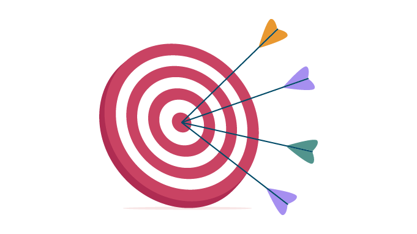

The simplest BROWSER MESSENGER

Моя МЕТA
Моя мета - це стоворити Простий браузерний месенджер, а також використання баз данних. Навчитися новим технологіям: HTML, CSS, JavaScript. Чат повинен працювати в режимі реального часу!
Використані ТЕХНОЛОГІЇ
З технологій та інструментів я використовував: HTML, CSS, JavaScript, Figma, MiroBoard, MongoDB, Git, GitHub, GitHub Desktop, VS Code


Використані РЕСУРСИ
Я використовував багато різних ресурсів, але найбільше: https://developer.mozilla.org, YouTube.com
Всі використані іконки, зображення, відео, шрифти взяті з безкоштовних та відкритих ресурсів!
© 2024 The site is the property of user called Little_Miracle(the creator of this site). All rights reserved.